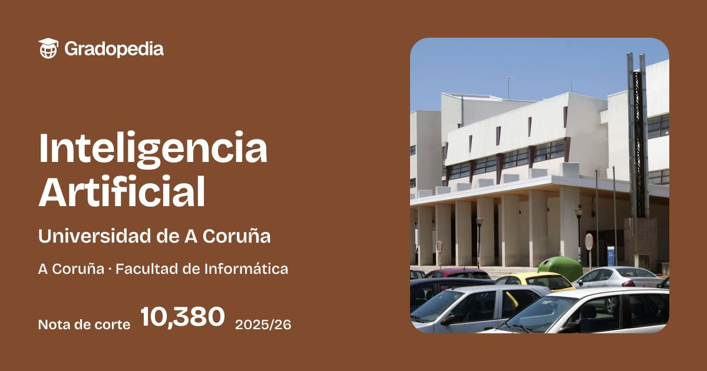
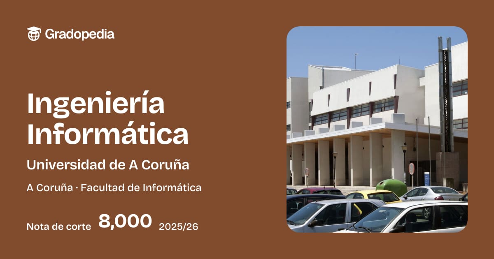
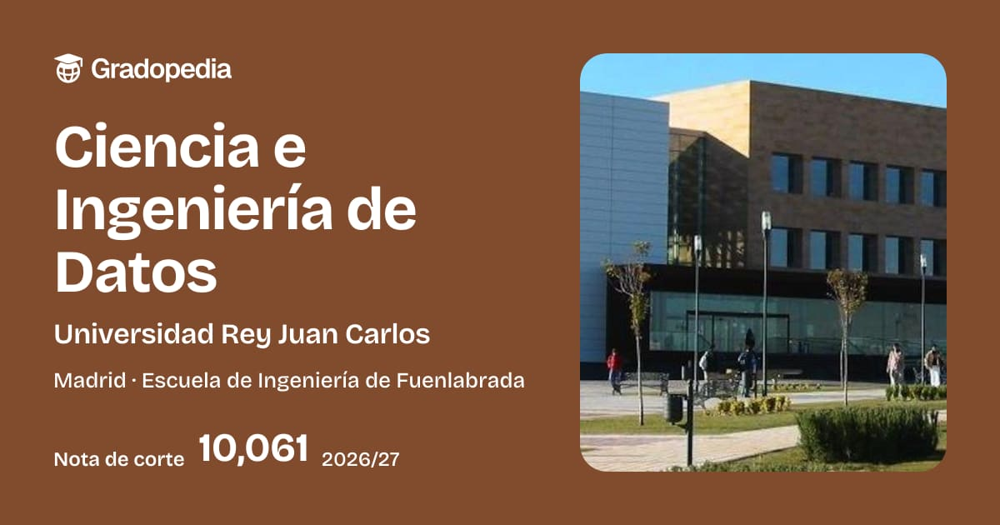

Esta carrera se centra en crear sistemas inteligentes capaces de aprender, analizar información y resolver problemas.
Ver más
Forma profesionales capaces de diseñar, desarrollar y mantener programas, aplicaciones y sistemas informáticos.
Ver más
Se centra en analizar e interpretar grandes cantidades de datos para obtener información útil y resolver problemas.
Ver másSe dedica a crear tecnologías que imitan ciertas capacidades humanas, como aprender y resolver problemas.
Se enfoca en diseñar programas, desarrollar aplicaciones y mejorar sistemas tecnológicos.
Trata de recopilar, organizar y estudiar datos para extraer información relevante.